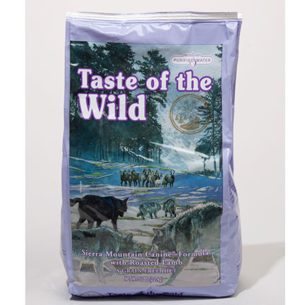

Diet & Nutrition

Food
Rosie eats Taste of the Wild Sierra Mountain Canine Recipe with Roasted Lamb.
She eats 2 cups of food twice a day (morning and night.)
This specific food was chosen due to its Grain-free recipe made with real lamb as the first ingredient for lean nutrition and to help support strong muscles
Taste of the Wild has added vitamins and powerful antioxidants from real fruits and vegetables to support overall health.
The company also uses omega-3 and omega-6 fatty acids to support a healthy skin and coat